한국인이 "교복"하면 떠오르는 복장은 재킷과 셔츠, 바지와 치마를 단정히 갖춘 정장형 교복일 것이다
하지만 2010년대부터 수도권을 시작으로 교복 대신 생활복을 권장하는 학교들이 늘어났고
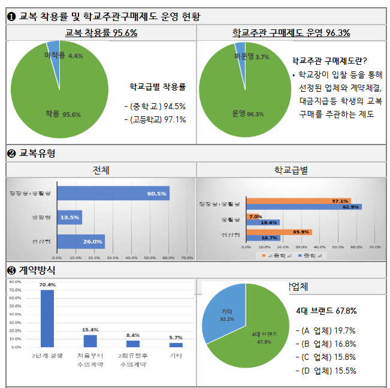
2026년 현재 정장형 + 생활형을 채택한 학교의 비율이 과반을 넘을 만큼 현재 한국은 학생들이 생활복을 입는 것이 대세다
사실 이런 통계가 없어도 거리에서 학생 볼 일 많은 학군지나 번화가가 생활 반경인 사람들은 체감될 것
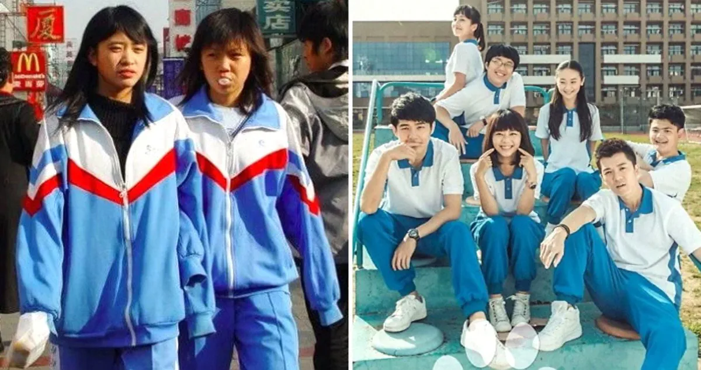
옆나라인 중국은 훨씬 이전부터 체육복 형태의 교복 ㅇㅇ
"흐음~ 그럼 한국은 중국 따라가는 건가~"
그런데!
이 현상은 한국만이 아니다!
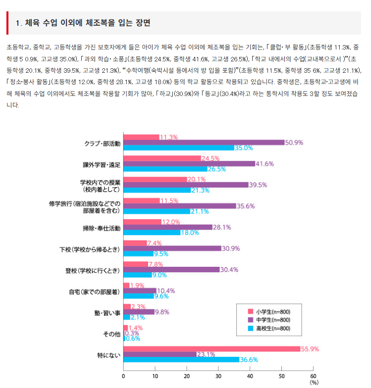
일본의 경우 교복 업체에서 조사한 결과 자녀가 학교 내 수업에서 (교내복으로 착용) 체육복을 착용하고 있다고 응답한 학부모의 비율이 초등학생 20.1%, 중학생 39.5%, 고등학생 21.3% 정도 되며
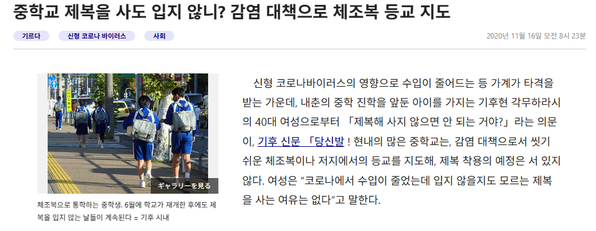
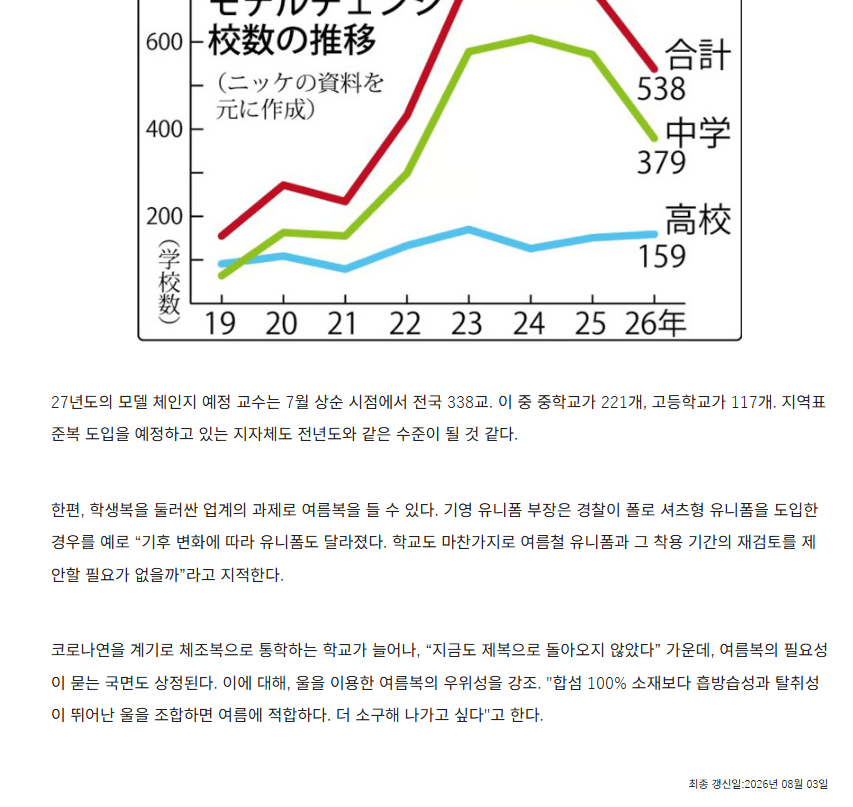
코로나 시절에 체육복 등교를 시작한 뒤로 체육복으로 등교하는 학교가 늘었다고 한다.
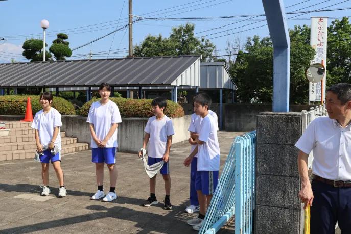
일본 내 저지 등교의 예시
대만의 경우
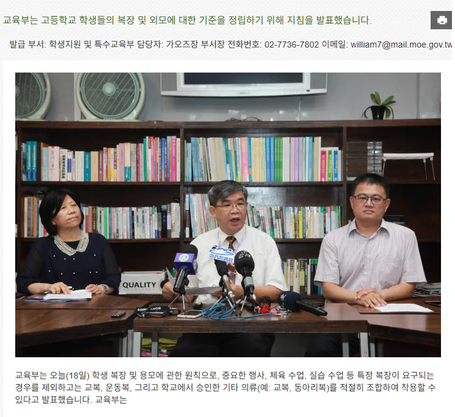
2016년 교육부에서 교복, 운동복, 학교에서 승인한 기타 의류를 적절히 섞어 입을 수 있다고 전국적 지침을 내린 뒤로
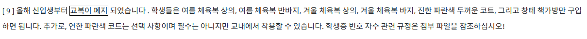
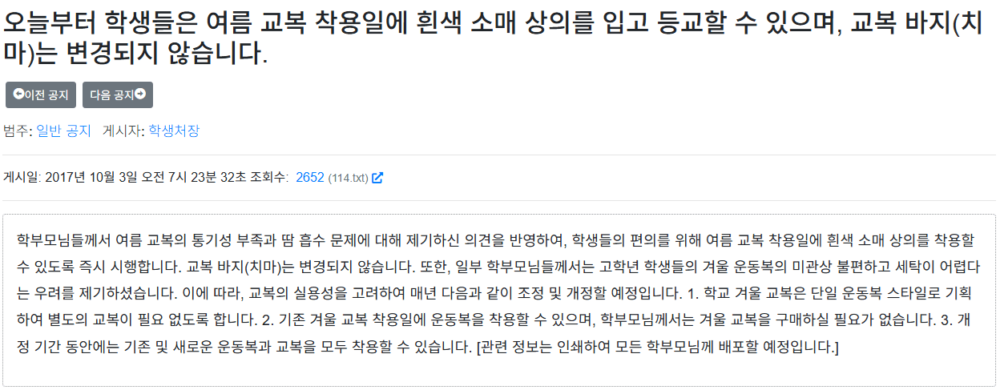
아예 교복을 폐지하고 체육복으로 돌린 학교들이 나오기 시작했다
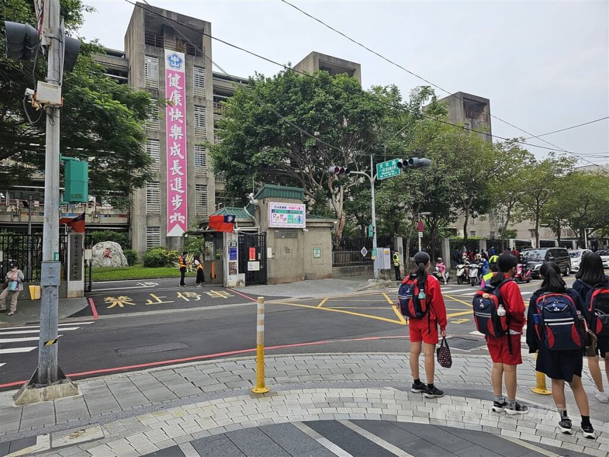
체육복을 입고 등하교 중인 중학생들의 모습
그렇다면 왜 생활복 스타일이 확산 중일까?
한국이나 일본이나 대만이나 큰 이유 중 하나로는 '더위'였다
교육부 블로그 2013년 게시글
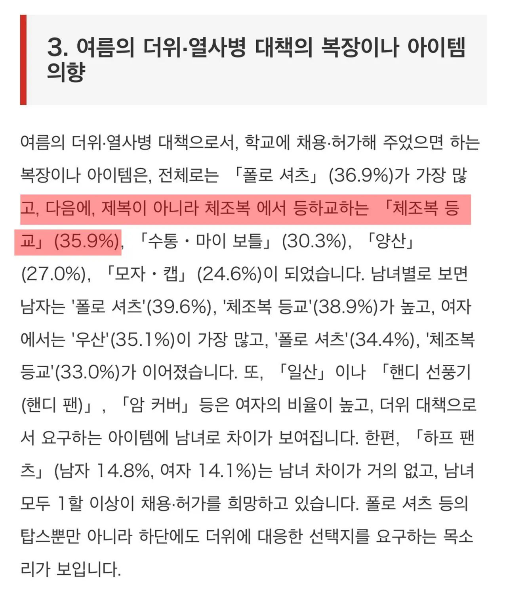
여름에 체육복 등교를 요구하는 일본 학생들
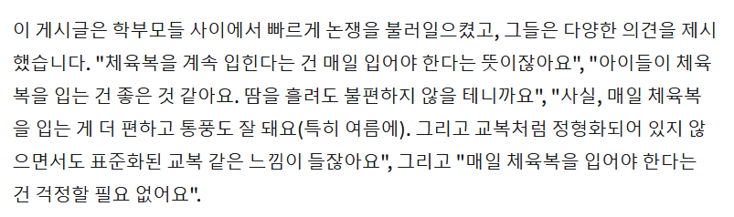
정장형 교복이 폐지되고 체육복으로 바뀌자 대만 학부모들의 반응
물론 편안함이 1순위겠지만
한국, 일본, 대만의 여름은 매우 사악한데다 지구온난화 덕분에 더욱 뜨거워지니 정장을 버리고 통풍과 환기성이 좋은 체육복으로 바뀌고 있지 않나, 를 생각해볼 수 있겠다
특히 한국은 겨울까지 생각하면 생활복으로 빠르게 바뀐 것도 이해가 됨
애들은 뭘 입어도 이쁘니 뭐...